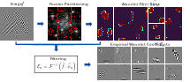
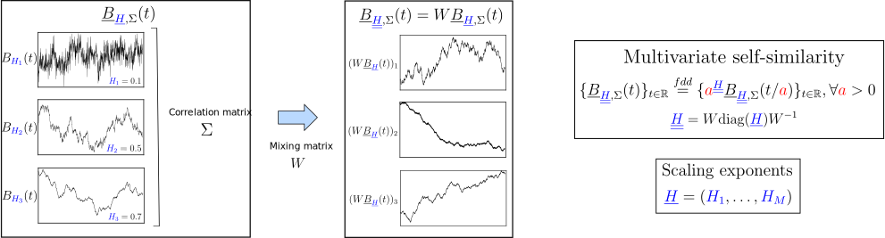
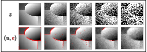
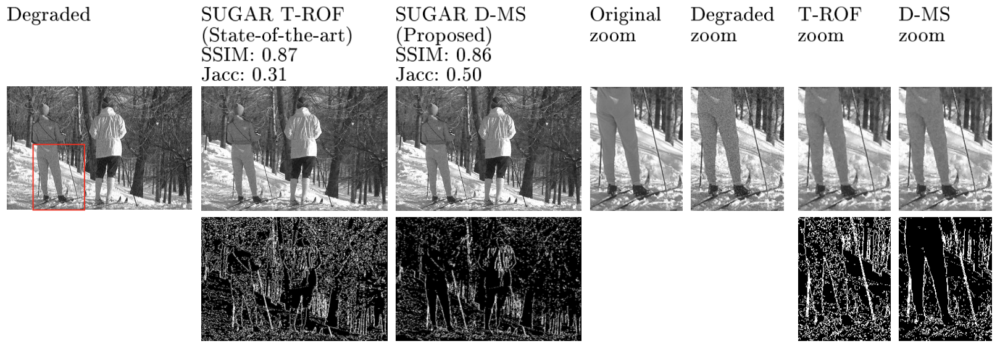

Time-frequency representation based on a filter bank defined from the image under study. The construction consists in two stages: `(i)` the extraction of supports containing the harmonic modes of the image under study and `(ii)` the wavelet filters `\psi_n` are defined by deforming a wavelet kernel so that that they cancel (or rapidly decrease) outside the supports. The deformations are performed using mappings estimated by the demons algorithm. The empirical wavelet coefficients `\mathcal{E}_n` correspond to the resulting filtering in Fourier domain of the given image `f`.

Toolbox: Empirical Wavelets (Deformable Mappings)
Paper: C.-G. Lucas and J. Gilles (2025)
Multivariate self-similarity exponents across multivariate time series, modeled by an operator fractional Brownian motion (ofBm), are classically estimated by a linear regression of wavelet eigenvalues across scales. A bias corrected estimation is performed by the computation of wavelet eigenvalues from the same number of wavelet coefficients. A clustering strategy is built from successive pairwise tests between close estimates.

Toolbox: OFBM
Clustering strategy: C.-G. Lucas, P. Abry, H. Wendt and G. Didier (2022)
Estimation: C.-G. Lucas, G. Didier, H. Wendt and P. Abry (2024)
Joint piecewise smooth image reconstruction and contour detection from an observed noisy image is performed by the minimization of the Discrete Mumford-Shah (D-MS) functional, which enforces constraints related to smoothing over image and sparsity over contours to obtain a piecewise smooth reconstructed image `u` and sparse estimated contours `e` from observed noisy images `z`: $$\underset{u,e}{\rm minimize} \quad \Vert u - z \Vert_2 + \beta \Vert (1-e) \odot Du \Vert_2 + \lambda \Vert e \Vert_1,$$ where `\odot` denotes the component-wise product, `D` is a discrete difference operator, and `\beta > 0` and `\lambda > 0` are regularization parameters. A Stein-like strategy providing optimal hyperparameters `\beta` and `\lambda` is designed, based on the minimization of an unbiased quadratic risk estimate. Efficient and automated minimization of the risk estimate relies on an unbiased estimate of the risk's gradient with respect to hyperparameters. The resulting parameter-free procedure, not requiring prior image processing expertise, is thus amenable to real-world applications.

Here is a comparison with the state-of-the-art SUGAR T-ROF (see Cai and Steidl, 2013 and Deledalle et al., 2014) run using gsugar on a BSD69 dataset image:
Toolbox: SUGAR D-MS
Paper: C.-G. Lucas, B. Pascal, N. Pustelnik and P. Abry (2021)